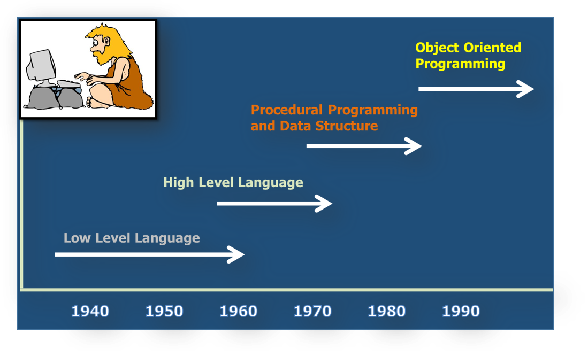

Python 기초강의(6) - Python 객체지향
Python 기초강의는 여러 절로 구성되어 있습니다.
- Python 기초강의(1) - Introduction
- Python 기초강의(2) - Python 기본
- Python 기초강의(3) - Python 제어문
- Python 기초강의(4) - Python function
- Python 기초강의(5) - Python 연습문제(1)
- Python 기초강의(6) - Python 객체지향
- Python 기초강의(7) - Python Magic Function
- Python 기초강의(8) - Python First Class
- Python 기초강의(9) - Python Closure
- Python 기초강의(10) - Python Decorator
- Python 기초강의(11) - Python Generator
- Python 기초강의(12) - Python Module
- Python 기초강의(13) - Python Exception & File
- Python 기초강의(14) - Python 연습문제(2)
- Python Django 웹 프레임워크(1) - introduction
- Python Django 웹 프레임워크(2) - Poll project 개발(1)
- Python Django 웹 프레임워크(3) - Poll project 개발(2)
- Python Django 웹 프레임워크(4) - Poll project 개발(3)
- Python Django 웹 프레임워크(5) - Poll project 개발(4)
- Python Django 웹 프레임워크(6) - Poll project 개발(5)
- Python Django 웹 프레임워크(7) - Django의 개발방식
- Python Django 웹 프레임워크(8) - Blog project 개발
영상설명
이번 영상은 Python 언어의 Object Oriented 영상입니다.
Python 객체지향
Why OOP?
class & instance
Inheritance
Python 기초강의 - Python 객체지향
Python 객체지향
Programming paradigm의 변화에 대해서 그림으로 알아보겠습니다.

구조적 프로그래밍
- 프로그램 작성 시 기능으로 세분화 한 다음 각각의 기능을 모듈로 제작
- 프로그램을 모듈(함수)이라는 실행단위로 분할.
- 상위 모듈에서 하위 모듈을 호출하는 방식으로 프로그램을 구성
- 프로그램 구조를 이해하기 쉽고 프로그램을 빠르게 작성할 수 있다.
- 프로그램 규모가 커지게 되면 유지보수와 기존 코드의 재사용에 한계가 나타나게 된다.
객체지향 프로그래밍
- 현실세계의 해결해야 하는 문제를 그대로 프로그램으로 표현.
- 즉, 프로그램을 기능으로 세분화 하지 않고
- 프로그램을 구성하는 주체(객체)들을 파악하고 그 객체들간의 data 흐름에 초점을 맞추어서 프로그램 작성
- 프로그램의 설계, 작성이 상대적으로 어려움.
- 하지만 이렇게 작성된 객체지향 프로그램은 유지보수와 재사용성에 이점이 있다.
정리를 하자면,
객체 지향 프로그래밍은 컴퓨터 프로그래밍의 패러다임의 하나입니다.
객체 지향 프로그래밍은 컴퓨터 프로그램을 명령어의 목록으로 보는 시각에서 벗어나 여러 개의 독립된 단위,
즉 객체들의 모임으로 파악하고자 하는 것입니다.
Why OOP?
간단하게 학생데이터를 이용하여 왜 객체지향으로 프로그래밍을 하면 편리하고 좋은지를 알아보도록 하겠습니다.
다음의 코드는 학생의 이름, 학과, 학번, 각 학년 평점을 저장하는 다양한 방법을 보여줍니다.
# python OOP
# 학생의 이름, 학과, 학번, 각 학년 평점을 저장하는 다양한 방법
# 1명의 학생 정보를 저장
stu_name = "홍길동" # 이름
stu_dept = "컴퓨터" # 학과
stu_num = "202011003" # 학번
stu_grade = 3.5 # 학점
# 만약 3명의 학생 정보를 저장하려면 어떻게 해야 할까요?
stu1_name = "강감찬" # 이름
stu1_dept = "철학" # 학과
stu1_num = "201998015" # 학번
stu1_grade = 4.5 # 학점
stu2_name = "신사임당" # 이름
stu2_dept = "경영" # 학과
stu2_num = "201844028" # 학번
stu2_grade = 3.4 # 학점
stu3_name = "이순신" # 이름
stu3_dept = "국어국문" # 학과
stu3_num = "202011040" # 학번
stu3_grade = 3.8 # 학점
# 위의 코드는 중복된 코드가 너무 많다. 리스트를 이용해서 조금 더
# 나은 형태의 코드로 변경해보겠습니다.
stu_name = ["강감찬", "신사임당", "이순신"]
stu_dept = ["철학", "경영", "국어국문"]
stu_num = ["201998015", "201844028", "202011040"]
stu_grade = [4.5, 3.4, 3.8]
print("학생이름 : {}\n학생학과 : {}\n학번 : {}\n성적 : {}".format(
stu_name[0], stu_dept[0], stu_num[0], stu_grade[0]))
# 첨자(index)가 같은 데이터는 한 사람의 데이터를 의미하게 처리했습니다.
# 조금 나은 형태이지만 이 역시 실수를 유발할 여지가 많고 첨자(index)처리에
# 혼동이 올 수 있기 때문에 추천되지 않습니다.
# 마지막으로 class를 이용해 한 사람의 데이터를 논리적인 하나의 단위(객체)로
# 묶어 사용하는 방법을 살펴보겠습니다.
class Student(object):
def __init__(self, name, dept, num, grade):
self.name = name
self.dept = dept
self.num = num
self.grade = grade
def __repr__(self):
return self.name
students = []
students.append(Student("강감찬", "철학", "201998015", 4.5))
students.append(Student("신사임당", "경영", "201844028", 3.4))
students.append(Student("이순신", "국어국문", "202011040", 3.8))
print(students)
print(students[0].dept)
class & instance
파이썬은 객체 지향적 프로그래밍 언어입니다. 파이썬의 모든 것은
객체(object)입니다. 문자열, 리스트, 함수, 심지어 모듈 또한 객체(object)입니다.
일반적으로 파이썬 객체지향을 설명할 때 하는 말입니다. 사실 객체지향 언어의 대부분이 같은 특성을 가집니다. 그러면 객체는 무엇일까요?
객체란 속성과 같은 여러가지의 데이터와 함수(객체 안에서는 메소드라고 부릅니다.)를 포함한 하나의 데이터 구조를 말합니다
파이썬에서 이 객체들은 변수에 할당될 수도 있고, 함수(혹은 메소드)의 인자로 전달될 수도 있습니다.
# 객체란 무엇인가?
class Student(object):
def __init__(self, name, dept, num, grade):
self.name = name
self.dept = dept
self.num = num
self.grade = grade
def get_student_info(self):
return "이름 : {}, 학과 : {}, 학번 : {}".format(self.name,self.dept,self.num)
# 객체 생성
stu1 = Student("홍길동", "컴퓨터", "202011003", 3.5)
# 메소드 호출
print(stu1.get_student_info())
print(Student.get_student_info(stu1))
dir() 함수
중요한 함수 중 하나는 dir() 입니다. 이 함수는 만약 인자로 객체가 들어오지 않으면 현재 module scope상의
지역변수를 리턴하고 객체 인자가 있을 경우 객체의 모든 속성과 메소드의 목록을 리턴합니다.
# dir() 함수
print(dir(stu1))
# 결과
['__class__', '__delattr__', '__dict__', '__dir__', '__doc__', '__eq__',
'__format__', '__ge__', '__getattribute__', '__gt__', '__hash__', '__init__',
'__init_subclass__', '__le__', '__lt__', '__module__', '__ne__', '__new__', '__reduce__',
'__reduce_ex__', '__repr__', '__setattr__', '__sizeof__', '__str__', '__subclasshook__',
'__weakref__', 'dept', 'get_student_info', 'grade', 'name', 'num']
python은 함수 역시 객체
한가지 특이한 점은 python의 함수 역시 객체라는 것입니다.
def my_func():
pass
# my_func의 속성과 메소드 확인
print("my_func의 dir() : ", dir(my_func))
my_func의 dir() : ['__annotations__', '__call__', '__class__',
'__closure__', '__code__', '__defaults__', '__delattr__', '__dict__',
'__dir__', '__doc__', '__eq__', '__format__', '__ge__', '__get__',
'__getattribute__', '__globals__', '__gt__', '__hash__', '__init__',
'__init_subclass__', '__kwdefaults__', '__le__', '__lt__', '__module__',
'__name__', '__ne__', '__new__', '__qualname__', '__reduce__',
'__reduce_ex__', '__repr__', '__setattr__', '__sizeof__', '__str__', '__subclasshook__']
# my_func에 새로운 속성 추가(객체이기 때문에 가능)
my_func.myName = '강감찬'
# 추가된 속성 확인
print("my_func의 dir() : ", dir(my_func))
my_func의 dir() : ['__annotations__', '__call__', '__class__',
'__closure__', '__code__', '__defaults__', '__delattr__', '__dict__',
'__dir__', '__doc__', '__eq__', '__format__', '__ge__', '__get__',
'__getattribute__', '__globals__', '__gt__', '__hash__', '__init__',
'__init_subclass__', '__kwdefaults__', '__le__', '__lt__', '__module__',
'__name__', '__ne__', '__new__', '__qualname__', '__reduce__',
'__reduce_ex__', '__repr__', '__setattr__', '__sizeof__', '__str__',
'__subclasshook__', 'myName']
# 추가한 속성값 출력
print("my_func의 myName : ", my_func.myName)
my_func의 myName : 강감찬
__init__ 메소드
class로 부터 객체를 생성할 때 중요한 메소드가 하나 있습니다. 바로 __init__ 메소드입니다. 일반적으로
다른 객체지향언어에서는 생성자(constructor)라고 불리는 것입니다. python에서는 initializer라고 부릅니다.
이 메소드는 객체가 생성될 때 자동으로 호출되며 호출되는 순간 instance를 self라는 인자로 받아서 처리합니다.
위의 코드에서
print(stu1.get_student_info())
라는 부분이 있는데 이 코드가 실행되면 실제로는
print(Student.get_student_info(stu1))
이 코드가 실행되게 됩니다.
인스턴스 변수, 인스턴스 메소드
위에서 self라는 키워드에 대해서 설명했는데 이 self를 이용하여 생성되는 속성을
인스턴스 변수, self를 이용한 메소드를 인스턴스 메소드라고 합니다.
당연히 이 인스턴스 변수는 각각의 instance가 개별적으로 가지고 있는 데이터 입니다.
클래스 변수
이 인스턴스 변수와 살짝 다른 개념이 바로 클래스 변수(class variable)입니다. 이 변수는
모든 인스턴스가 공유하는 변수라고 생각하시면 됩니다.
즉, 인스턴스 차원이 아닌 클래스 차원의 변수라고 보시면 됩니다.
# class variable 예제
class Student(object):
scholarship_rate = 3.5 # class variable
def __init__(self, name, dept, num, grade):
self.name = name
self.dept = dept
self.num = num
self.grade = grade
def get_student_info(self):
return "이름 : {}, 학과 : {}, 학번 : {}".format(self.name,self.dept,self.num)
def is_scholarship(self):
if self.grade >= Student.scholarship_rate: # class variable 사용
return True
else:
return False
# 문제를 단순화 시키기 위해서 학점부분을 학년으로 구분하지 않고
# 전체평균평점으로 처리
stu1 = Student("홍길동", "컴퓨터", "202011003", 4.0) # 객체 생성
print("장학금 여부 : ", stu1.is_scholarship())
네임스페이스(namespace)
Python은 그림과 같은 모양의 네임스페이스라는 것을 가지고 있습니다.
이 네임스페이스는 객체들의 이름들을 나눠서 관리하는데,
이름을 찾을때 인스턴스 네임스페이스 -> 클래스 네임스페이스 -> 수퍼 클래스 네임스페이스의 순서로 찾아갑니다.
하지만 반대로는 찾지 않습니다. 즉, 자식이 부모의 네임스페이스는 참조 할 수 있는데,
부모가 자식의 네임스페이스를 참조할 수는 없습니다.
따라서 class variable을 사용하는 위의 코드에서 다음과 같이 변경해서 사용할 수 있습니다.
def is_scholarship(self):
# class variable을 class명이 아닌 self로 사용가능.
if self.grade >= self.scholarship_rate:
return True
else:
return False
다른 객체지향 언어(예를들어 Java)같은 경우 instance가 생성된 후 속성을 동적으로 추가할 수 없습니다. 하지만 python은 동적으로 속성을 추가할 수 있기 때문에 namespace와 관련된 다음과 같은 문제가 생길 수 있습니다.
# namespace 주의해야 할 점
class Student(object):
scholarship_rate = 3.5 # class variable
def __init__(self, name, dept, num, grade):
self.name = name
self.dept = dept
self.num = num
self.grade = grade
def get_student_info(self):
return "이름 : {}, 학과 : {}, 학번 : {}".format(self.name,self.dept,self.num)
def is_scholarship(self):
if self.grade >= self.scholarship_rate: # instance namespace 사용
return True
else:
return False
# 문제를 단순화 시키기 위해서 학점부분을 학년으로 구분하지 않고
# 전체평균평점으로 처리
stu1 = Student("홍길동", "컴퓨터", "202011003", 4.0) # 객체 생성
print("장학금 여부 : ", stu1.is_scholarship()) # True
stu1.scholarship_rate = 4.5 # instance namespace 안에
# scholarship_rate 속성이 새로 생성
print("장학금 여부 : ", stu1.is_scholarship()) # False
class method
인스턴스 메소드는 self인 인스턴스를 인자로 받고 인스턴스 변수와 같이
하나의 인스턴스에만 한정된 데이터를 생성, 변경, 참조하기 위해서 사용됩니다.
클래스 메소드는 cls인 클래스를 인자로 받고 모든 인스턴스가 공유하는
클래스 변수와 같은 데이터를 생성, 변경 또는 참조하기 위해서 사용됩니다.
# class method 예제
class Employee(object):
raise_rate = 1.1 # 연봉 인상율 class variable
def __init__(self, u_name, u_pay):
self.u_name = u_name
self.u_pay = u_pay
def apply_raise(self):
self.u_pay = int(self.u_pay * self.raise_rate)
def get_pay(self):
return '현재 "{}"의 연봉은 "{}"입니다.'.format(self.u_name, self.u_pay)
# 클래스 메소드 데코레이터를 사용하여 클래스 메소드 정의
@classmethod
def change_raise_rate(cls, rate):
cls.raise_rate = rate
print('인상율 "{}"가 적용 되었습니다.'.format(rate))
emp_1 = Employee("홍길동", 1000)
emp_2 = Employee("강감찬", 5000)
# 연봉 인상 전
print(emp_1.get_pay())
print(emp_2.get_pay())
# 연봉 인상율 변경
Employee.change_raise_rate(1.5) # class method 호출
# 연봉 인상
emp_1.apply_raise()
emp_2.apply_raise()
# 연봉 인상 후
print(emp_1.get_pay())
print(emp_2.get_pay())
static method
인스턴스 메소드는 인스턴스를 통해서 호출이 되고,
첫 번째 인자로 인스턴스 자신을 자동으로 전달합니다. 이 인수를 self라고 칭합니다.
클래스 메소드는 클래스를 통해서 호출이 되고 @classmethod라는 데코레이터로 정의합니다.
첫 번째 인자로는 클래스 자신이 자동으로 전달되고 이 인수를 cls라고 칭합니다.
스태틱 메소드는 앞서 설명한 두 메소드와는 틀리게 인스턴스나 클래스를 첫 번째 인자로 받지 않습니다. 스태틱 메소드는 클래스 안에서 정의되어 클래스 네임스페이스 안에는 있을뿐 일반 함수와 동일하게 동작합니다.
# static method 예제
class Employee(object):
def __init__(self, u_name, u_pay):
self.u_name = u_name
self.u_pay = u_pay
def apply_raise(self):
self.u_pay = int(self.u_pay * self.raise_rate)
def get_pay(self):
return '현재 "{}"의 연봉은 "{}"입니다.'.format(self.u_name, self.u_pay)
# 스태틱 메소드 데코레이터를 사용하여 클래스 메소드 정의
@staticmethod
def is_valid(u_pay):
if u_pay < 0:
print("인상율은 음수가 될 수 없습니다.")
emp_1 = Employee("홍길동", 1000)
Employee.is_valid(-10)
public vs. private
Python은 기본적으로 instance variable과 class variable이 public으로 지정됩니다.
즉, 객체 외부에서 자유롭게 해당 객체의 데이터를 살펴보고 변경할 수 있다는 말이죠.
편하기는 하지만 객체지향적 관점에서는 지양해야 되는 부분입니다. 객체 외부에서 객체의 데이터를
함부로 변경하게 되면 여러 문제를 야기할 수 있기 때문입니다.
객체지향에서는 information hiding(정보은닉) 개념이 있어서 이런 부분을 지양하도록 강력 권장합니다.
그러면 우리의 public으로 기본 설정된 instance variable을 어떻게 하면 private으로 변경할 수
있을까요? __를 instance variable 앞에 붙이면 됩니다.
다음의 예제를 이용해서 살펴보도록 하죠
# public vs. private
class Student(object):
def __init__(self, name, dept, num):
self.name = name # public
self.__dept = dept # private
self.num = num
def get_student_info(self):
return "이름 : {}, 학과 : {}, 학번 : {}".format(self.name,self.__dept,self.num)
def getDept(self):
return self.__dept
def __getInfo(self):
return "__로 시작했기 때문에 private method 입니다."
stu1 = Student("홍길동", "컴퓨터", "202011003") # 객체 생성
print("학생 이름은 : {}".format(stu1.name)) # 홍길동
print("학생 이름은 : {}".format(stu1.num)) # 202011003
# print("학생 이름은 : {}".format(stu1.__dept)) # Error
print(stu1.get_student_info()) # access 가능
print(stu1.getDept()) # getter
# print(stu1.__getInfo()) # Error
외부 함수와 내부 method 구별
외부함수의 이름과 class의 method 이름이 같다면 어떻게 사용해야 하는가에 대한 설명입니다.
# 외부 함수와 내부 method 구별
def print_name():
return "이것은 소리없는 아우성!!"
class Student(object):
def __init__(self, name):
self.name = name
def print_name(self):
return "이름 : {}".format(self.name)
def call_method(self):
print(print_name()) # 외부함수 호출
print(self.print_name()) # instance method 호출
stu1 = Student("홍길동") # 객체 생성
stu1.call_method()
Inheritance
상속은 한 번 정의한 데이터 타입(class)을 필요에 따라 재활용해서 반복되는 코드를 줄이고자 하는 목적을 가지고 있습니다.
여기서는 Unit, Marine을 대상으로 상속에 대한 내용을 알아보도록 하겠습니다.
가장 먼저 Unit class를 정의합니다. 이 class는 모든 유닛이 가지고 있어야 할 속성을 가지고 있는 베이스 class가 될 것입니다. 그리고 이 Unit class를 상속받는 Marine sub class를 정의하도록 하겠습니다.
# Inheritance 예제
class Unit(object):
def __init__(self, damage, life):
self.utype = self.__class__.__name__
self.damage = damage
self.life = life
def show_status(self):
print('직업: {}'.format(self.utype))
print('공격력: {}'.format(self.damage))
print('생명력: {}'.format(self.life))
class Marine(Unit):
pass
marine_1 = Marine('100', '100')
marine_1.show_status()
# Student class가 어떠한 구조를 가지고 있나를 확인
print(help(Marine))
인스턴스 생성시에 무조건 호출되어야 하는 __init__() method도 자신의 네임스페이스에서
찾지 못 하면
부모 클래스에서 참조하는 것을 알 수 있습니다.
이제 코드를 약간 수정해서 Marine class에 Marine만이 가지고 있는 속성을 추가해 보도록 하겠습니다.
# method overriding
class Unit(object):
def __init__(self, damage, life):
self.utype = self.__class__.__name__
self.damage = damage
self.life = life
def show_status(self):
print('직업: {}'.format(self.utype))
print('공격력: {}'.format(self.damage))
print('생명력: {}'.format(self.life))
class Marine(Unit):
def __init__(self, damage, life, offense_upgrade, defense_upgrade):
self.utype = self.__class__.__name__
self.damage = damage
self.life = life
self.offense_upgrade = offense_upgrade
self.defense_upgrade = defense_upgrade
def show_status(self):
print('직업: {}'.format(self.utype))
print('공격력: {}'.format(self.damage))
print('생명력: {}'.format(self.life))
print('공격력 업그레이드: {}'.format(self.offense_upgrade))
print('방어력 업그레이드: {}'.format(self.defense_upgrade))
marine_1 = Marine('100', '100',0,0)
marine_1.show_status()
상위 class의 method를 하위 class에서 재정의 하는 것을 method overriding이라고 합니다.
같은 이름의 method를 사용해야 하지만 class가 다르기 때문에 실제 수행되는 코드가
변경되어야 할 때 이 개념을 이용합니다.
method overriding을 이용했지만 위의 코드는 중복되는 코드가 너무 많아서
상속의 장점을 살리지 못하고
있습니다. 이 코드를 super()를 이용하여 수정해 보도록 하겠습니다.
# method overriding using super()
class Unit(object):
def __init__(self, damage, life):
self.utype = self.__class__.__name__
self.damage = damage
self.life = life
def show_status(self):
print('직업: {}'.format(self.utype))
print('공격력: {}'.format(self.damage))
print('생명력: {}'.format(self.life))
class Marine(Unit):
def __init__(self, damage, life, offense_upgrade, defense_upgrade):
super(Marine, self).__init__(damage, life)
self.offense_upgrade = offense_upgrade
self.defense_upgrade = defense_upgrade
def show_status(self):
super(Marine, self).show_status()
print('공격력 업그레이드: {}'.format(self.offense_upgrade))
print('방어력 업그레이드: {}'.format(self.defense_upgrade))
marine_1 = Marine('100', '100',0,0)
marine_1.show_status()
기본적인 내용에 대해서는 알아봤으니 이번에는 간단한 시나리오를 가지고 클래스를 디자인해보도록 하겠습니다.
Marine, Medic, DropShip 3 종류의 Unit을 사용할 것이고 4명의 Marine을 생성하고 2명의 Medic, 1개의 DropShip을 생성한 후 DropShip에 6명을 태워서 특정 지점에 공격하러 가는 내용으로 class를 정의하고 실행해보도록 하겠습니다.
# 간단한 예제
class Unit(object):
def __init__(self, damage, life):
self.utype = self.__class__.__name__
self.damage = damage
self.life = life
def show_status(self):
print('직업: {}'.format(self.utype))
print('공격력: {}'.format(self.damage))
print('생명력: {}'.format(self.life))
def attack(self):
pass
class Marine(Unit):
def __init__(self, damage, life, offense_upgrade, defense_upgrade):
super(Marine, self).__init__(damage, life)
self.offense_upgrade = offense_upgrade
self.defense_upgrade = defense_upgrade
def show_status(self):
super(Marine, self).show_status()
print('공격력 업그레이드: {}'.format(self.offense_upgrade))
print('방어력 업그레이드: {}'.format(self.defense_upgrade))
def attack(self):
print('마린이 공격합니다. 땅땅!!')
def stimpack(self):
if self.life > 20:
self.damage = self.damage * 1.5
self.life = self.life - 10
print('마린이 Stimpack을 사용합니다. 칙!!')
else:
print('체력이 낮아 Stimpack을 사용할 수 없습니다.')
class Medic(Unit):
def __init__(self, damage, life, defense_upgrade):
super(Medic, self).__init__(damage, life)
self.defense_upgrade = defense_upgrade
def show_status(self):
super(Medic, self).show_status()
print('방어력 업그레이드: {}'.format(self.defense_upgrade))
def attack(self):
print('메딕이 치료합니다. 힐힐!!')
class DropShip(Unit):
def __init__(self, damage, life, defense_upgrade):
super(DropShip, self).__init__(damage, life)
self.defense_upgrade = defense_upgrade
self.unit_arr = []
def show_status(self):
super(DropShip, self).show_status()
print('방어력 업그레이드: {}'.format(self.defense_upgrade))
def attack(self):
print('목표지점으로 이동합니다. 쓩!!')
def board(self,unit_arr):
self.unit_arr = unit_arr
print('부대를 태웠습니다.')
def drop(self):
print('모든 Unit이 DropShip에서 내립니다.')
return self.unit_arr
# Marine 생성
marine_1 = Marine(10,100,0,0)
marine_2 = Marine(10,100,0,0)
marine_3 = Marine(10,100,0,0)
marine_4 = Marine(10,100,0,0)
# Medic 생성
medic_1 = Medic(0,100,0)
medic_2 = Medic(0,100,0)
# 병력을 list안에 모은다.
troop = list()
troop.append(marine_1)
troop.append(marine_2)
troop.append(marine_3)
troop.append(marine_4)
troop.append(medic_1)
troop.append(medic_2)
# DropShip 생성
dropship = DropShip(0,50,0)
# DropShip에 부대원을 태운다.
dropship.board(troop)
# 공격지점으로 이동
dropship.attack()
# 공격지점에서 부대원들 내리기
troop = dropship.drop()
# 부대원들 공격
for unit in troop:
if isinstance(unit,Marine):
unit.stimpack()
unit.attack()
End.
Python 강좌는 아래의 책과 사이트를 참조했습니다. 조금 더 자세한 사항을 알고 싶으시면 해당 사이트를 방문하세요!!
- Python Official HomePage
- 점프 투 파이썬 - 이지스 퍼블리싱
- 전문가를 위한 파이썬(Fluent Python) - 한빛미디어
- 파이썬 웹 프로그래밍 - 한빛미디어
- 이미지 출처 : Designed by rawpixel.com / Freepik